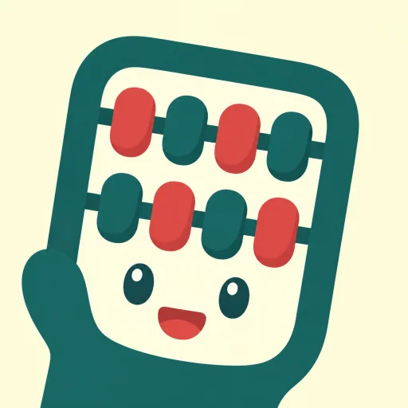
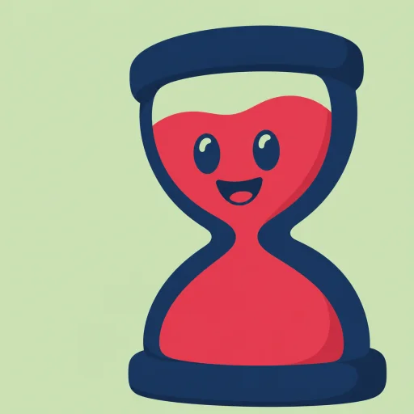
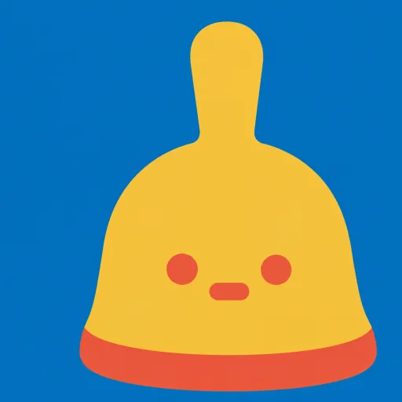
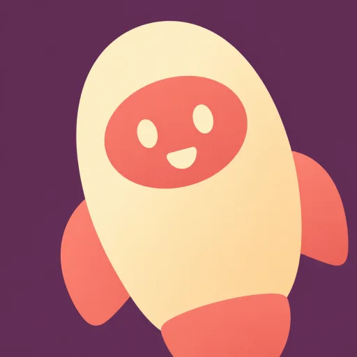
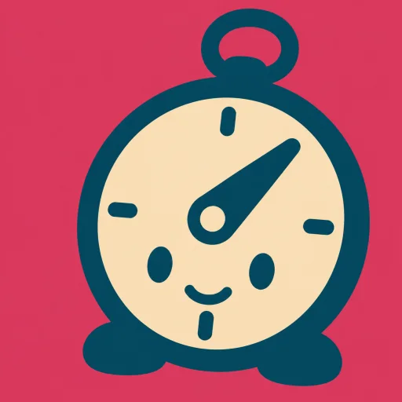
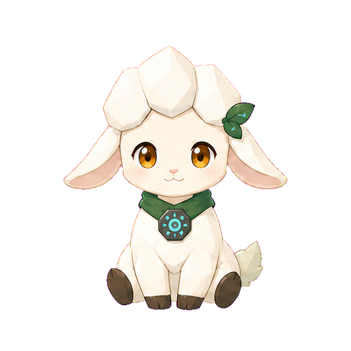
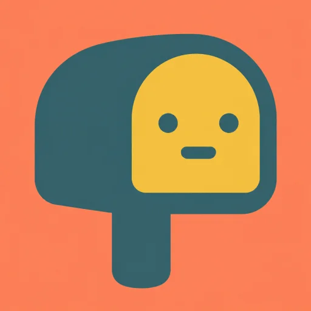

待辦總數
0
GRADE 6 TEAM LEAD WORKSPACE




教學進度、AI 協助與小綿助記事都先收在這裡；需要時再展開，不打擾任務清單。

可手動安排；開啟 AI 後，也能依期限、節數與複習彈性產生草案。
例如選「只排第一次」，產生的進度只會顯示第一次評量與其複習節數；其他日期可先保留，不會納入本次排程。
官方辦公日曆是排程基準；學校行事曆仍可能由教育主管機關或學校另行調整。
新增時會套用上方「新增單元預設節數」；之後可逐一加減。系統會依星期一到五的實際節數與休假日安排週次。
描述情境，AI 會先分析與建議；若屬任務，再由老師確認是否建立主任務與子任務。
直接描述事情即可，例如「我要處理親師溝通……」。常用 Prompt 只在需要管理範本時打開。

網頁記事保存在目前瀏覽器；也可以匯入桌面小綿助的 secretary_data.json。

從 LINE 傳來的訊息先收在這裡；按「轉為任務」或「轉為記事」確認後才會正式建立。
在這裡預先輸入每天的聯絡本；晨間大屏開啟時會自動顯示在點名畫面旁的黑板上。同一天以最後儲存者為準。
晨會報告會依職稱、任教年級班級、科目與參與會議，挑出「與我有關」及「需要行動」的內容。姓名只留在本機顯示，不會放進送給 AI 的教師背景。
可把科目、年級與班級寫在名稱中，例如「六年一班社會」。同一科教不同班時，請分別新增，教學進度會各自保存。
去識別化會在瀏覽器本機完成。請先查看預覽，再決定是否交給 AI；自動規則仍可能漏掉未標示的人名。
開啟後才會顯示「AI 行政助理」版面。送出前請先檢查去識別化預覽；API 金鑰只保存在這台電腦的目前瀏覽器，不會寫入 GitHub 或備份檔。
沒有金鑰？前往 Google AI Studio 申請 Gemini API 金鑰。Google 提供部分模型的免費用量，仍受當時的配額與服務條款限制。
安裝後即可常駐桌面，提供今日任務、逾期提醒、快速記事、喝水、久坐與服藥提醒，並透過本機連線與這個工作台交換資料。
XiaoMianZhu.exe；不必安裝 Python、pip，也不必輸入指令。c39e8ed58802254d0dd83f93d7e18eedc2914e18c8360643cbec5959c2b4060a這裡管理桌面版小綿助的偏好。網頁可以保存設定與控制「小綿助記事」入口；Windows 開機自動執行需下載設定檔，讓桌面版啟動一次後套用。
127.0.0.1:8767。第一次使用正式網站時，請下載一次桌面設定檔並放到小綿助旁邊，以授權目前的網站來源；桌面程式關閉時，網頁仍可完整使用。
xiaomianzhu_settings.json 放在「小綿助.exe」旁邊，再啟動一次小綿助。桌面版會匯入設定，並依選項新增或移除目前 Windows 帳號的自動啟動項目，不需要系統管理員權限。
LINE 小幫手是選用功能：在 LINE 隨手傳文字、語音或照片，訊息會先進工作台的「LINE 收件匣」，由你確認後才建立任務或記事。不設定時，工作台與桌面小綿助完全不受影響。需要自行部署一份 Google Apps Script（免費），資料留在你自己的 Google 帳號。
需要：LINE 官方帳號（免費）＋一份自己的 Google 試算表＋部署 LineBot.gs。完整步驟請看安裝說明；在 LINE 輸入「我的ID」可查自己的 userId。
備份包含目前任務、介面設定與去識別規則，但不包含 API 金鑰。還原前會先檢查檔案格式。
正在估算本機儲存量……
將目前工作清單與安全設定匯出成 JSON 檔。
選擇本系統產生的 JSON；模擬版會還原至目前畫面。
把同一份完整備份存進你自己的 Google 試算表，換電腦或清掉瀏覽器資料時可完整還原。保留最近 10 份，每天自動備份一次。
本系統採本機優先：不需登入、不需 GAS。任務與設定預設留在目前瀏覽器；桌面小綿助資料留在目前 Windows 帳號的 AppData。
📚 完整版：系統說明與資安（含使用情境教學、每個授權的逐條白話解釋）→ 可直接把該頁連結傳給同事或資訊組長。
任務、教學進度、記事與偏好以瀏覽器本機儲存保存。不同瀏覽器、不同 Windows 帳號或不同網站網域各自獨立；清除網站資料前請先下載 JSON 備份。
桌面程式只綁定 127.0.0.1:8767，不接受區域網路或外網直接連入；限制請求來源、方法與 5 MB 大小，且不提供任意檔案路徑讀取。
去識別化在瀏覽器執行，但自動規則可能漏判。送出 AI 前仍要人工檢查；學生姓名、電話、地址、健康、輔導與性平資料不應交給外部 AI。
測試版 EXE 若尚未使用受信任的程式碼簽章，Windows SmartScreen 可能顯示「無法辨識的應用程式」；這是信譽／簽章警告，不等同判定為病毒。正式分享建議簽章或上架 Microsoft Store，並提供 SHA-256 驗證碼。
只從本專案正式 GitHub／Netlify 下載；不要要求使用者關閉防毒或建立整個資料夾的排除規則。若遭誤判，應提交檔案給 Microsoft 分析並重新發布，不能承諾所有學校電腦一定允許執行。
v1.6 Windows 可攜版新增 DPI 感知（高解析縮放畫質清晰）、瀏覽器版秘書面板、桌寵自癒心跳與單一實例保護，解壓縮後直接開啟 XiaoMianZhu.exe，不必安裝 Python，也不要求系統管理員權限。程式尚未購買商業程式碼簽章，部分防毒軟體仍可能因新程式信譽不足而提示；請只從本專案 Release 下載並核對 SHA-256，不要關閉防毒或設定排除。
以下分別列出原始校務系統、流程參考、圖示與小綿助素材來源；原作者連結不代表原作者為本修改版背書。
工作台的吉祥物風格圖示（貓頭鷹、羅盤、信箱等）來自「IP as Logo Skill」開源圖庫，可免費下載並免費商用（MIT License）。
IP as Logo Skill 圖庫・開源專案
本工作台改作自 mihozip 的開源專案「school-admin-daily-dashboard」，原專案採 MIT License。
開啟原作者 GitHub 專案・原作者 Facebook・查看原始授權
小綿助的「桌面入口、理解、確認、任務追蹤」流程參考 mihozip 的 DeskPet 開源專案；本修改版未使用 DeskPet 白貓圖像。
開啟 DeskPet 原作者專案・查看 DeskPet 授權
首頁主視覺與工作標示插圖由本修改版專案擁有者提供或為本專案製作，未取用 Irasutoya、DeskPet、學校吉祥物或其他既有卡通角色；檔案清單與後續替換規則記錄於 THIRD_PARTY_NOTICES.md。
小羊角色設定、原始格與動畫素材由本修改版專案擁有者提供或為本專案製作，與 DeskPet 白貓圖像不同；正式環境只會讀取 cona0815/teacher-dashboard 內的小綿助素材。詳細聲明請參閱 THIRD_PARTY_NOTICES.md。